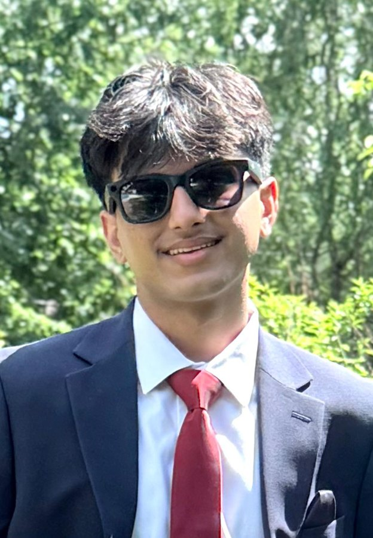

I am a nationally ranked debater, a data science researcher, and the co-founder of a youth nonprofit.
Learn MoreFour years, so far
A running record of what I have been working on, by school year.
2026–27Senior year · in progress
- Jul 2026AI and Data Engineering Intern at Blackstraw, in TampaBuilt LensIQ, a natural-language analytics chatbot for contact lens manufacturing operations
- Jun 2026Junior counselor at the West Essex YMCATwo weeks with a group of twelve kindergarten-age campers
2025–26Junior year
- May 2026Submitted my first research paper for peer reviewPredicting CPI through lagged changes in PPI, to the National High School Journal of Science
- Apr 2026Earned a Silver bid to the Tournament of ChampionsRanked #22 nationally at the JW Patterson TOC
- Apr 2026Became President, Strategy & Impact at Livingston Youth LeadersAfter two years as vice president of operations
- Feb–May 2026NYU GSTEM Data Science ProgramBuilt a sentiment classifier from scratch and benchmarked it against TF-IDF and kNN
- Feb 2026Triple octofinalist at the Harvard National TournamentTop 64 of a 372-team field
- Jan 2026Quarterfinalist and #12 speaker at The Patriot Games
- Oct 2025Semifinalist at the Harvard UKTOC ISDI 1 international qualifierTop 4 of 51, the deepest run of the season
- The seasonAlso cleared to elimination rounds at Georgetown, Notre Dame, Katy Taylor TFA, and three TOC Digital national seriesFull results on the Debate page
- Sep 2025Started independent research on how producer prices move consumer prices
- Aug 2025Named captain of Speech & Debate and vice president of the Coding Club
- Summer 2025Two-week NSDA debate campNational Speech & Debate Association
- Jul 2025Coding Academy at Tufts UniversityBuilt a 2D action game in Python and Pygame, and demoed it to Tufts faculty
- The yearContinued volunteering with Sewa International
2024–25Sophomore year
- Mar 2025Quarterfinalist at Newark CFL #2First varsity elimination round
- Dec 2024President's Volunteer Service Award, GoldAwarded by Sewa International
- The year120 volunteer hours with Sewa InternationalDisaster relief, food drives, senior centers, FEMA response, and coat drives
- Aug 2024Second summer as a counselor-in-training at Camp HOPETwo weeks, 60+ hours supporting children and adults with developmental disabilities
- The seasonJunior varsity tennis, second season
2023–24Freshman year
- Apr 2024Became vice president of operations at Livingston Youth Leaders
- Jan 2024Started coaching debate as an independent tutor
- Jan 2024Began volunteering with Sewa International78 hours in the first year
- Aug 2023Entered Livingston High SchoolJoined Speech & Debate, Key Club, FBLA, and the school orchestra
- Aug 2023First summer as a counselor-in-training at Camp HOPETwo weeks, 60+ hours
- Jun 2023First job, as court monitor and junior tennis coach at the West Orange Tennis Club
- The seasonJunior varsity tennis, first season
Before high school2021 – 2023
- Jun 2021Co-founded Livingston Youth Leaders during the pandemicA youth-led nonprofit that has since raised and distributed more than $30,000
- 2021–23Volunteered at the Livingston Public Library20 hours
- EarnedFirst-degree black belt in Taekwondo